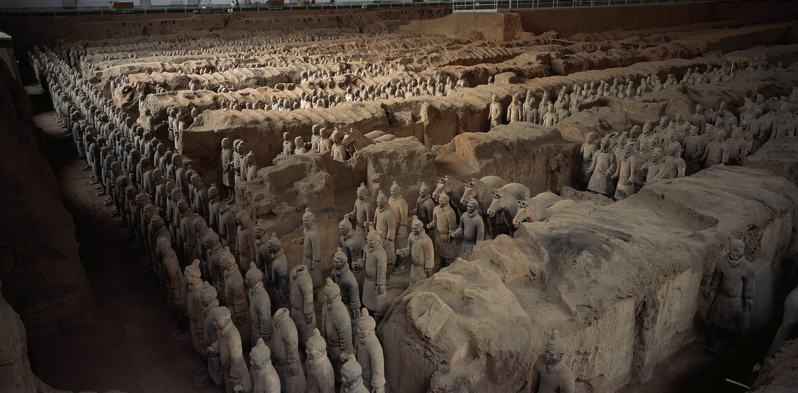
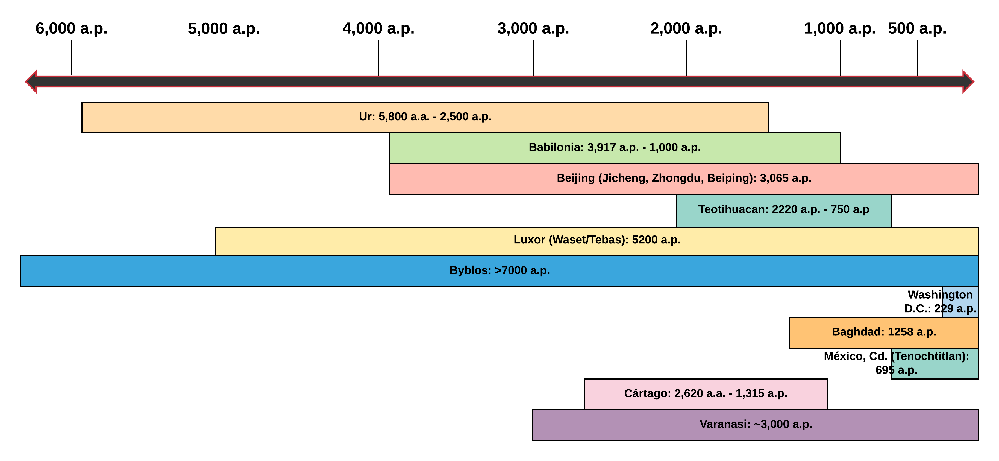

SECCIÓN EN DESARROLLO
Historia Social Contemporánea
Agresión Imperialista
Post WW2 World Order: US Planned to Wipe USSR Out by Massive Nuclear Strike 15/08/15
President Kennedy’s Role in the Vietnam War September 23, 2020 23/09/20
Global War on Humanity: America’s Unceasing Pursuit of Hegemony 03/10/20
Main Development Directions Of US Ground Forces Till 2028 08/10/20
While No One Was Looking: America, Guyana, and Venezuela 09/10/20
The Correlation Between U.S. Democracy and CIA-Sponsored Terror in Cuba’s Case 13/10/20
Before the Bidens ‘Did’ Ukraine, There Was Iraq – and Serbia 16/10/20
The U.S. Did Not Defeat Fascism in WWII, It Discretely Internationalized It 17/10/20
Towards a US-China War? The Creation of a Global Totalitarian System, A “One World Government”? 18/10/20
American Militarism Marches On: No Discussion or Media Coverage of Washington’s War Against the World 22/10/20
Australia’s War Crimes and Culture of impunity 08/11/20
US Has Killed More Than 20 Million People in 37 “Victim Nations” Since World War II 14/11/20
“Operation Condor”: The CIA’s Secret Global War Against Latin America’s Left 04/12/20
“La agresión saudí contra Yemen es un proyecto estadounidense” 25/12/20
Suckered Into Stupid Wars 03/01/21
NATO Special Operations Forces 07/01/21
Estados Unidos. Donald Trump y sus más de 240 medidas contra Cuba 19/01/21
US needs to choose between new ICBMs & nightmare of nuclear deterrence OR meaningful disarmament through arms control 20/02/21
How NATO Forms Anti-Russian Views Among the Youth of Former USSR Countries 20/02/21
The Spoils of War: Afghanistan’s Multibillion Dollar Heroin Trade 23/02/21
Navalny’s Poisoning: The Story of a Hoax 23/02/21
EEUU participó en operaciones militares en 85 países en 3 años 26/02/
21
How We Got the Bikini and Learned to Hate the Bomb 01/03/21
The Bamiyan Buddhas: An Afghan tale 03/03/21
Humanitarian Imperialism 03/03/21
Why Is Brazil Such a Basket Case?—The Role of U.S. Covert Action 07/03/21
Return of the Leviathan: The Fascist Roots of the CIA and the True Origin of the Cold War 07/03/21
Western Territorial Double-Standards Against China 11/03/21
Declive y colapso de los "Estados Unidos" de "América"
https://edition.cnn.com/2019/07/02/politics/house-bill-defense-department-network-child-pornography/index.html
Will Michele Flournoy Be the Angel of Death for the American Empire? 25/09/20,
Inferno and the “Fourth Circle”. The American Empire and the 2020 Pandemic 26/09/20
Hunter Biden’s Laptop Emails Leak Reveals His Burisma Criminal Dealings in Ukraine 15/10/20
El imperialismo norteamericano, ¿regreso a la “normalidad” o más desorden mundial? 16/10/20
Washington’s Disgraceful Politicking Over Arms Control & Global Security 16/10/20
Una insaciable sed de sangre y culto a la muerte 20/10/20
America Has No Allies, Only Hostages 20/10/20
Colegio Electoral y voto indirecto: todo sobre el sistema que rige las elecciones en EEUU 22/10/20
US Power Has Been Creaking Under Trump, While China Strengthens 30/10/20
The Myth of U.S. Democracy: Americans are Voting for the Commander in Chief of a “Worldwide Killing Machine” 04/11/20
Palantir’s Tiberius, Race, and the Public Health Panopticon 07/12/20
Rhodes Scholars Surge in Biden’s Potential Cabinet 27/12/20
America’s Richest 1% Owned 5% in 1990, Own 36% Today 06/01/21
Blue State Economies Will Soon Crumble – But Will They Take Red States With Them? 17/01/21
US economic decline and global instability 19/01/21
Biden Institute Refuses To Disclose Donors; Blinken Faces Questions Over $22 Million In Anonymous Chinese Contributions 20/01/21
Internecine and Existential Struggles in a Transformed World 25/01/21
The ‘Insurrection’ and Its Discontents: ‘American Exceptionalism’ Revisited 25/01/21
Who Are You, Mr. Trump? 26/01/21
How the FBI Created Domestic Terrorism: 80 Years of Psychological Warfare Revealed 26/01/21
A Historic Turning-Point in American Politics 28/01/21
Biden Day One: Nothing Changed, Nothing Ever Will 31/01/21
If America Dissolves 31/01/21
The West Is Losing Its Soft Power 04/02/21
Who Controls American Imperialism? 06/02/21
Time’s Praise Of The Conspiracy That Guaranteed Biden’s Presidential Victory 08/02/21
Off To a Diverse Start: Biden Doubles Down on Some Bad Policies and Appointments 11/02/21
Secretly, Biden’s Foreign Policies Are Trump’s Foreign Policies 23/02/21
If America Splits Up, What Happens To The Nukes? 24/02/21
Las estrategias de manipulación de la CIA, QAnon y los «conspiranoides» 28/02/21
Washington’s Lopsided Bilateral Relationship with Israel 03/03/21
El Ente Sionista
Sionismo: Sobre mitos, declaraciones y crímenes 03/11/20
“Greater Israel”: The Zionist Plan for the Middle East 08/11/20
Israel. Psicología de masas del sionismo 05/12/20
The American Money Tree: The Untold Story of US Aid to Israel 30/12/20
Military-Technical Cooperation Between Israel And Germany 01/01/21
Goodbye Sheldon Adelson 19/01/21
The Anti-Semitic Birth of the Zionist State: A History of Israel’s Self-Hating Founders 17/03/21
Estancamiento y Decadencia Europea
The mortal battle of the Perfidious Albion 28/09/20
Rothschild Heirs: Who Are the Living Descendants of Europe's Famous Banking Dynasty 16/01/21
Denmark Serving U.S. Wars for Three Decades: Russia as Rogue State Is Rationale 18/01/21
Poland, With NATO’s Assistance, Lost In A Simulated War Against “Eastern Enemy” In Five Days 04/02/21
The Geopolitics of North Macedonia’s Accession to the EU. Pressures from Bulgaria 09/02/21
The Geneva School and the Globalists. Switzerland’s Contribution to the Neoliberal World Order 11/02/21
Norway May Become Battleground Between U.S. and Russia, Says Expert 24/02/21
What is European Fascism? 17/03/21
Conflicto Inter-imperialista
More Evidence the US Fought WWII Against Great Britain 09/03/21
Nazi Healthcare Revived Across the Five Eyes: Killing Useless Eaters and Biden’s COVID Relief Bill 10/03/21
Las luchas de liberación nacional
en África
History: Nasser and Black Africa 28/09/20
Nigerians in Diaspora Hope for Biafra’s Political Autonomy 30/09/20
The U.S. Just Blackmailed Sudan 28/10/20
A Convergence of Calamities (Burkina Faso) 16/11/20
La actual guerra es entre el pueblo saharaui y la alianza israelí-marroquí 30/11/20
La serpiente negra, el muro de la vergüenza marroquí 18/01/21
DRC: How the CIA Got Patrice Lumumba 19/01/21
Nuevas perspectivas del conflicto de Sáhara Occidental en el panorama mundial 19/01/21
African Media Perpetuating Negative Stereotypical Narratives 10/02/21
en Asia
The Nagorno-Karabakh Conflict 29/09/20
Brief History Of Nagorno-Karabakh Conflict (Map Update) 02/10/20
MAJOR: CIA and MI6 behind Armenian–Azerbaijani conflict? 02/10/20
Nagorno-Karabakh: The Multipolar Conflict 09/10/20
Russia’s Strategic Intervention in Syria Five Years On – An ‘Unpardonable Blow’ to U.S. Empire 09/10/20
Will Azerbaijani Gas Compete with Russia in Southern Europe? 22/10/20
Elephants in the Room: US Military and CIA Interventions since World War II 29/10/20
Second Karabakh-War Reshapes Transport Corridors In South Caucasus 04/12/20
Un aliado muy fiel: Mongolia soñó con ser la 17ª república de la URSS y China se lo 'impidió' 22/12/20
Korea and Moon Jae-in: God Save Korea! God Bless the President! 27/12/20
The Political Economy of Corruption in Korea: Corruption Kills People, Ruins the Economy, Violates Human Rights 27/12/20
US Sanctions Against Iran Allowed China to Penetrate Its Influence Deeper into Central Asia 17/02/21
Myanmar: Exploiting Lessons Learnt In The Middle East 24/02/21
Sobre Filipinas, Duterte y el Partido Comunista de Filipinas
Joma Sison talks about former student Duterte, other candidates 14/02/16
Survey shows Filipinos more satisfied with Duterte government than any other 18/01/18
'It should be US who should learn the lesson from us' – Philippines’ president Duterte 24/01/20
India
India and the Weaponization of Human Rights 21/02/21
Farmers' Struggle and Women’s Participation in India 28/02/21
‘Indian Liberalism is a Myth and Muslims Became its Mascot’—Sanjay Srivastava 18/03/21
en Abya Yala
“Democracia radical en la filosofía política zapatista” 31/12/20
The 62nd Anniversary of the Cuban Revolution: An Unprecedented Chapter in World History 01/01/21
Will Venezuela Go To War Over Oil? 25/01/21
With Likely Victory of Andrés Arauz, Ecuador Will Join Latin America’s Anti-Imperialist Surge 29/01/21
La actividad económica de Argentina cayó 10% en 2020 por la pandemia, el peor desplome desde 2002 24/02/21
Colombia continúa siendo el mayor productor mundial de cocaína 03/03/21
The Cuban Revolution’s Commitment and Contribution to Worldwide Public Health Care 06/03/21
Lula podrá postularse y el Tribunal Supremo anula todas las condenas 13/03/21
La "Cuarta Transformación" en México
México celebra la nacionalización de la industria eléctrica con un estatismo recargado; AMLO busca su rescate 27/09/20
Entre "los puros" y "los conversos": el abecé de la disputa por la dirigencia nacional de Morena 30/09/20
Guerra de Calderón incrementó desapariciones; en 12 años, ilícito creció 5,000%: Cesop 07/10/20
Corrupción de 5 expresidentes: PGR confirmó vínculos de Zedillo y su familia con el narcotráfico 07/10/20
Mexicanos tienen más educación: Inegi. El nivel escolar subió a 9.7 años y analfabetismo cayó a 4.7% 25/01/21
Biden quiere integrar México a la OTAN 09/02/21
Poseen mineras canadienses 60% del oro 07/03/21
Coronavirus en México
en Europa
The Geopolitics of North Macedonia’s Accession to the EU. Pressures from Bulgaria 09/02/21
Rusia Resurrecta
Why the 1996 Russian Election Was an All-Important Turning Point 20/01/21
Why Russia Is Driving the West Crazy 09/02/21, Pepe Escobar
Putin: Enemies Want To Put Russia Under External Control, But They Will Fail 24/02/21
Putin, crusaders and barbarians 27/02/21
Grito desesperado: el pueblo quiso salvar a la URSS del abismo, pero no fue escuchado 17/03/21
La Nueva China
The Global Semiconductor Market: China Deploys Sun Tzu to Prevail in the Chip War 30/09/20, Pepe Escobar
Guerra de los semiconductores de EU contra China 14/10/20, Jalife
Will Confucius marry Marx? 10/10/20, Pepe Escobar
Fed Up With Capitalism, Young Chinese Brush Up on ‘Das Kapital’ 09/12/20
China’s Economy of Peace 14/12/20
In China’s New Age Communes, Burned-Out Millennials Go Back to Nature 15/01/21
The triads, the Kuomintang and Hong Kong’s “democracy riots” 02/02/21
El indetenible avance económico 19/02/21
Taiwan is Chinese for Dummies 03/03/21
El Cinturón y la Ruta
What’s Wrong with Development? The Geopolitics of The Belt and Road Initiative (BRI) 08/10/20
Metanarrativas de Relevancia Estratégica
The Death of the Nation State has been somewhat exaggerated (Part 2) 12/10/20
Win-Win vs Lose-Lose: The Time Has Come for the World to Choose 21/10/20
A Little Recognized and Most Pervasive Form of Racism: The Economic Model of “Global Capitalism” 04/11/20
Why Do People Believe Propaganda? Creating Submissively “Obedient Individuals” 09/11/20
Public-Safety Ratings of the World’s Countries 14/11/20
From Propaganda to Ego, All Our Major Problems Are Due to Misperception 14/11/20
The Triumph of Mankind Over the Great Reset: Guns, Books, and the Social Contract 20/11/20
Bretton Woods 3.0. The Great Lockdown, The Great Reset, and The Great Paradigm Shift 14/12/20
A Hard Look at Rent and Rent Seeking with Michael Hudson & Pepe Escobar 23/12/20, Pepe Escobar
What Happened to the Global Uprisings of a Decade Ago? 23/12/20
Unipolar vs Multipolar: The Death of McKinley and the Loss of America’s Soul 23/12/20
On Revolution and Counter-Revolution 03/01/21
Shapers of slavery: the plan 09/01/21
Shapers of slavery: the leadership 10/01/21
Shapers of slavery: the empire 11/01/21
Shapers of slavery: the virus 12/01/21
History of Economic Thought: John Maynard Keynes and the Battle for Bretton Woods 14/01/21
What the Essence of the Core Deal With Bankers Is 14/01/21
The Basic Principles of War Propaganda: The US Lies About Every War 19/01/21
The US Is Afraid of a Russian Nuclear Doomsday Torpedo for a Reason 24/01/21
The Will to Believe: Americans and Their Divine Masters 25/01/21
Why National Greatness Matters 28/01/21
Putin Warns World About Risks Of “Fight Of All Against All” In “Grim Dystopia” Amid Growing Crises 29/01/21
About “Inclusive” Capitalism 31/01/21
Is Materialism Destroying Society? Philosophical Materialism vs Destructive Materialism 31/01/21
Xi and Putin make the case for win-win vs. zero-sum 02/02/21
Bill Gates and Neo-Feudalism: A Closer Look at Farmer Bill 05/02/21
Bernays and Propaganda 06/02/21 04
Why They Don’t Want To Do Something 07/02/21
How Conspiracy Theorizing May Soon Get You Labelled a ‘Domestic Terrorist’ 15/02/21
Liberalisation of Agriculture: Lessons from Developed and Developing Countries 27/02/21
How a Guaranteed Income Can Actually Solve Inequality 13/03/21
On Nonduality, Politics, And Freedom 14/03/21
Historia Natural Contemporánea
Descubrimientos Científicos
Espacio Exterior
Could life exist deep underground on Mars? SEPTEMBER 23, 2020 https://phys.org/news/2020-09-life-deep-underground-mars.html
Historia / Antropología
Descubren en Arabia huellas de hace 120.000 años que podrían cambiar la historia de la humanidad 18.09.2020 https://mundo.sputniknews.com/ciencia/202009181092823604-descubren-en-arabia-huellas-de-hace-120000-anos-que-podrian-cambiar-la-historia-de-la-humanidad/
Biotecnología
Programmable medicine is the goal for new bio-circuitry research 08/10/20
Engineers create nanoparticles that deliver gene-editing tools to specific tissues and organs 08/10/20
Nanotecnología
Nanoscale machines convert light into work 08/10/20
Energy scavenging nanogenerator finds power all around us 20/10/20
Computación cuántica
Generating photons for communication in a quantum computing system 08/10/20
Desarollos del Marxismo
El marxismo romántico de Walter Benjamin 27/09/20, Michael Löwy
In Praise of Herbert Marcuse. The Scientific Study of Capitalism 15/11/20, Megan Sherman
Rick Kuhn on Henryk Grossman on Karl Marx on the break down of production based on exchange value… 31/01/21, Jehu
Historia Moderna (desde el "siglo XVIII")
Between a Forgotten Colony and an Abandoned Prefecture: Okinawa’s Experience of Becoming Japanese in the Meiji and Taishō Eras 19/10/20, Stanisław Meyer
El grave problema de la deuda hoy y ayer: de Juárez a la Revolución 24/10/20
El grave problema de la deuda externa: hora de suspender los pagos 25/10/20
A 70 años del primer paso para el ingreso de España en la ONU: ¿cómo una dictadura fascista resultó admitida? 30/10/20
Understanding the Tri-fold Nature of the Deep State 03/11/20
The History of US and British Support to Mussolini’s Fascism 14/01/21
Cómo la URSS quebró la máquina capitalista: así fue el 'gran robo de cereales' 11/02/21
Una misión secreta: cómo los nazis planeaban conquistar la Antártida 12/02/21
The Ethno-Territorial Separation of Bosnia Was the Key to Ending the War and Keeping Peace 12/02/21
Role of NGOs in Promoting Neo-Colonialism 19/02/21
Ten Years Ago: “Operation Libya” and the Battle for Oil: Redrawing the Map of Africa 20/02/21
Libya: When Historical Memory is Erased 20/02/21
Li Hongzhang and China’s Terrible, No Good, Very Bad Year 22/02/21
Part II – Western Capital’s Long Chinese Mission: From Opium to COVID Vaccine Credentials 23/02/21
Soviet Leader Khrushchev Instructed Lee Harvey Oswald to Kill JFK, Ex-CIA Chief Claims in Book 23/02/21
How Real Nazis Came to the Americas: the Recruitment of Klaus Barbie 26/02/21
The U.S. Pivot to Asia: Cold War Lessons From Vietnam for Today 17/03/21
La Comuna de París, revolucionaria e igualitaria 18/03/21
Descubrimientos Sobre Historia Antigua
Mayas tenían sistemas de filtración del agua hace 2000 años 24/10/20
¿Existieron realmente las guerreras amazonas de la mitología griega? 07/02/21
Pensamiento Económico
What the Great Reset Architects Don’t Want You To Understand About Economics 20/10/20
The Relationship Between Income and Wealth Disparities and Negative Real Interest Rates 10/02/21
When Does This Travesty Of A Mockery Of A Sham Finally Implode? 04/03/21
Bitcoin cost may rise to $ 80,000-$100,000 by end of year - expert 04/03/21
International Trade Puts Indian Farmers and Food Security at Risk 21/03/21
We don’t live and learn, we just repeat 21/03/21
Headed For A Collapsing Debt Bubble 21/03/21
Análisis Astrológico
Joe Biden wins? 07/11/20
Fires and Explosions portend a Military Coup 22/12/20
https://www.aljazeera.com/news/2021/2/19/rebel-riot-the-punk-soundtrack-to-myanmars-anti-coup-protests
Introducción a la Historia Social o Historia de las Sociedades Humanas
La historia de todas las sociedades que han existido hasta ahora no es la historia de la lucha de clases, esta es solo es la historia de las más recientes. Al ubicarnos cronologicamente en el tiempo es importante no perder la noción del presente ni la dimensión del tiempo transcurrido, todo esto tiene un efecto negativo en la psique. Se pierde dimensión del tiempo transcurrido cuando por cualquier necedad se deja de medir el tiempo en el sentido de "tiempo transcurrido antes del presente" y se empieza a medir arbitrariamente en el sentido de "tiempo anterior y posterior" a tal o cual suceso histórico. Esto es justo lo que ha pasado en este desgraciado mundo. Se ha impuesto la aberración de medir el tiempo partiendo la historia en dos de tal manera que el tiempo se empieza a contar al revés a partir de hace unos 2000 años. Yo ya no voy a seguir ese juego y te invito a abandonarlo aquí y ahora. Me rehuso a usar fechas en calendario gregoriano, utilizaré en cambio "años antes del presente" y así recuperaré la centralidad del presente y la dimensión del tiempo transcurrido hasta que se instaure un calendario decente.
Si trazo una línea temporal de la historia de nuestra especie en el mundo obtengo algo así:

Vemos que la mayoría de la historia conocida hasta ahora se concentra en los últimos 5,000 años. Estos abarcan todo el periodo de la historia escrita y todo lo que generalmente se llama civilización. Es la parte de la historia que corresponde al periodo de la lucha de clases pero no hay que perder de vista que la lucha de clases es ajena al 90% de la historia de nuestra especie.
Parece que las cosas sucedieron así:
Hace unos diez mil años había un movimiento constante de poblaciones que salían de África hacia Asia Occidental, llegando hasta Turquía a través de la región de Palestina. Probablemente salían de África en aquel momento a causa de cambios climáticos que dificultaban la vida en los alrededores del Nilo. Todas las hipótesis son controversiales en este punto, razón por la que yo solo mencionaré la más controversial (no por ser controversial sino por ser la que me parece más razonable) que apunta a que se trató de inundaciones y lluvias torrenciales y que se apoya en evidencia de daño de erosión causado por lluvia constante sobre un lado de la Esfinge.
De acuerdo con las teorías climatológicas, el clima en Egipto pasó de la humedad y lluvia a la sequedad y las arenas hace un máximo de 5,500 años. Si el faraón Keops o Khufu encontró y desenterró la Esfinge (otra hipótesis controversial) hace 4,586 años y diseñó al área que ahora conocemos como la necrópolis de Giza alrededor de esta, esto haría de la Esfinge básicamente el único monumento o construcción en el área durante por lo menos unos mil años. ¿Es esto inusual? ¿Hay algún paralelo?
Bueno, sí. Hay uno muy claro, no controversial y cuando menos con el doble de antiguedad en Göbekli Tepe, en la actual Turquía cerca de la frontera con Siria. Hace unos 10,000 años las personas que transitaban por esta ruta a la que ya hice referencia decidieron construir un centro ceremonial. Por sus características es tanto o más complejo que la Esfinge y es razonable suponer que debe haber requerido para su construcción de la cooperación de quizás un ciento de personas trabajando permantemente en el lugar durante un periodo de tiempo. Eso solo podría haber sido posible si estas personas recibían alimentos y herramientas de otras personas no directamente involucradas con la construcción pero interesadas en que se llevara a cabo.
Göbekli Tepe es un espacio diseñado para la práctica de una de las formas más básicas de la magia, el sacrificio. Sacrificios como pueden ser el peregrinaje hasta el lugar y el ofrendar alimentos. Estas prácticas, repetidas constantemente a través del tiempo debieron terminar por ritualizarse y constituirse en ceremonias formales. Es además un espacio multipropósito en donde cada una de las "T"s que forman el complejo tiene una función mágica específica, simbolizada por animales cuya manifestación plástica es en algunos casos realista y en otros idealizada. Los símbolos están claramente diferenciados lo que permite apreciar el espectro de lo simbólico conocido por estos pueblos.
Al contrario, la Esfinge es un único símbolo tallado directamente sobre la roca madre. Lo más razonable es pensar que fue creada con una función específica especialmente importante para los pueblos de la región, una hipótesis es que podría tener el propósito de contener la expansión de las arenas del Sahara sobre la zona fértil del Nilo.
Göbekli Tepe demuestra que hace 10,000 años las poblaciones de cazadores-recolectores nómadas y seminómadas (primerxs pastorxs) tenían la necesidad de realizar trabajos mágicos en común con pueblos o tribus distintas y que esta necesidad les llevó a erigir centros ceremoniales con bloques de piedra pesando decenas de toneladas miles de años antes de que sintieran alguna necesidad de convertirse en pobladorxs permanentes de algún lugar. Hay otros buenos ejemplos de esto además de Göbekli Tepe. Los dolmens y menhires levantados en la costa atlántica de Europa y en las ahora llamadas "islas británicas", por ejemplo. Stonehenge data de hace entre 5,000 y 4,000 años y habría cumplido una función similar a Göbekli Tepe. Entrar en mayores detalles sobre todo esto corresponde más bien a una introducción a la historia de la Magia que a una introducción a la historia en general (historia de la Magia que escribiré en su momento) pero era necesario partir de estas consideraciones como también es importante destacar que los procesos históricos no son unidireccionales.
Hace entre 15,000 y 11,000 años, en la zona de las catarátas del Nilo localizada en territorio al sur del actual Egipto y al norte de Sudán, existió la llamada "cultura Qadan". Este fue un pueblo semisedentario que desarrolló la agricultura unos 7,000 años antes que la mayoría de los pueblos del mundo. Inventaron la hoz y las piedras para moler grano. Sin embargo, desaparecieron y fueron reemplazadxs por cazadorxs-recolectorxs. La agricultura no volvería a Egipto sino hasta hace unos 8,000 años, importada desde Asia Occidental. ¿Cómo desaparecieron? El 45% de los cuerpos que se conservan en el cementerio prehistórico de Jebel Sahaba presentan heridas y marcas de violencia. Fueron aparentemente lxs "natufienses" responsables de esta masacre (quizás la primera evidencia material de violencia colectiva en la historia de nuestra especie), un pueblo de cazadorxs-recolectorxs que vivía en los territorios que actualmente corresponden a Jordán, Palestina y Siria y que practicó el sedentarismo desde mucho antes que la agricultura.
Prácticamente todas las evidencias de violencia colectiva, desde Europa hasta Australia, datan de hace unos 10,000 años y en todos los casos parecen haber resultado de fricciones entre el estilo de vida de cazadorxs-recolectorxs y el estilo de vida sedentario. El sedentarismo permite la acumulación de exedentes significativos de comida y recursos en general. Es vivir sobre un cofre del tesoro. Probablemente, en algún momento, alguien que pase por tu terruño querrá vaciar ese cofre. La única manera de impedirlo es aprendiendo a combatir. No basta con construir muros pues el asedio se inventó inmediatamente después de la invención de los muros. Ya hemos visto que el sedentarismo no necesariamente implica la práctica de la agricultura, de manera similar tampoco necesariamente implica la existencia de clases sociales, jerarquías o estratificación social.
La civilización del valle del Indo es un buen ejemplo de una sociedad sedentaria sin este tipo de prácticas aborrecibles. Las ruinas de Mohenjo-daro, en el territorio del actual Pakistán, dan testimonio de una época en la historia de civilización (hace entre 4,620 y 3,820 años) en la que se construyeron grandes ciudades planificadas con agua corriente, baños públicos y drenaje en donde todas las personas tenían básicamente la misma calidad de vida. Es posible que situaciones parecidas tuvieran lugar en otras regiones. En México no se crearon ciudades porque la gente prefería una vida rural con cada quien en su casa, a una distancia considerable de las demás casas. Sin embargo la inexistencia de evidencias sobre cobro de piso, guerras y explotación en general en el periodo entre la domesticación del maíz hace unos 8000 años y la construcción de los primeros centros ceremoniales hace unos 3500 años (en lugares como Tlatilco y San José Mogote) me lleva a pensar que durante este periodo no hubo clases sociales y si hubo agricultura.
Las clases sociales y el cobro de piso se empiezan a volver un verdadero problema en el planeta hace entre 4,000 y 3,000 años y la Magia tiene mucho que ver con todo esto. Sin desviarme demasiado hacia la historia de la Magia basta reconocer las obvias idioteces mágicas de los antiguos detentadores del poder. Hay muchas maneras en que unx se puede preparar para la muerte y tiene todo el sentido del mundo hacerlo. De hecho yo diría que el único propósito racional de la vida es la preparación para la muerte. Y durante miles y miles de años la gente se preparó para la muerte de maneras razonables.
Este muchacho de 18 años del paleolítico superior enterrado en Caverna delle Arene en la actual Italia, por ejemplo, utilizó dos artefactos mágicos para su viaje: Un gorro y un collar de cuentas. Además su craneo tiene un hoyo. Si no fue la herida que causó su muerte entonces significa que una vez muerto alguien le hizo ese hoyo, quizás pensando en ayudarle a salir del cuerpo.
Este absurdo es una pequeña muestra de la psicopatía del emperador Qin Shi Huang, el primer emperador de China. Su necrópolis es resultado del trabajo de 700,000 "súbditos", arruinó las finanzas del imperio y junto con las demás arbitrariedades despóticas que caracterizaron su gobierno provocó una rebelión campesina que terminó con su dinastía.
Periodicidad
Ultimadamente por una cuestión de mera practicidad se hace necesario dividir la historia planetaria ("global", "mundial" y "universal" son términos o vagos o demasiado grandes) por periodos. A gran escala no hay consenso sobre cuáles deberían ser esos periodos ni con respecto a cuándo se puede considerar que empiezan y terminan pero la mayoría sigue un cierto patrón. Los periodos que voy a emplear yo encajan en ese patrón y deberían resultar más o menos familiares. Una explicación a fondo sobre porque conceptualizar así los periodos históricos y sobre la razón de ser de esos patrones pertenece más bien a la filosofía de la historia y escribiré sobre ello en su momento en la sección de Filosofía de mi Mamotreto. Basta mencionar aquí que, como las etapas históricas de Marx y Engels, las mías se basan fundamentalmente en las formas de producción de las sociedades.
Voy a distinguir entre periodos Preagrícola, Agrícola, Mercantil e Industrial. Conceptualmente, estos periodos pueden ser entendidos tanto en un sentido relativo como en un sentido absoluto. En su sentido relativo se refieren a periodos históricos propios de cada una de las sociedades específicas que consideramos en un momento dado. En su sentido absoluto se refieren a periodos históricos en donde la amplia mayoría de las sociedades existentes en el planeta comparten las características de ese periodo. Quiero decir que, de acuerdo con mi modelo, una misma sociedad puede encontrarse en el periodo Agrícola en sentido absoluto y ser una sociedad Mercantil en sentido relativo. Estos conceptos además no son unidireccionales; aunque no es precisamente común, una sociedad puede tener un periodo Agrícola seguido de un periodo Mercantil seguido de otro periodo Agrícola, por ejemplo. Tampoco son secuenciales por lo que es posible que una sociedad pase de un periodo Preagrícola a un periodo Mercantil y de nuevo a un periodo Preagrícola, por ejemplo. Sin embargo, aunque no son secuenciales, en sentido absoluto hay una tendencia general subyacente en la historia de las sociedades en donde el periodo Agrícola es posterior al Preagrícola (de ahí que haya decidio emplear este término), el Mercantil es posterior al Agrícola y el Industrial posterior al Mercantil. Además de estos periodos, al referirme a sociedades específicas, voy a utilizar los de uso común en la historiografía tradicional de esas sociedades (periodos como Pre-clásico, Clásico y Post-clásico, periodos dinásticos, etc.).
El periodo Preagrícola en sentido absoluto abarca desde la evolución de nuestra especie homo sapiens sapiens hasta la adopción generalizada a nivel planetario de la agricultura y se caracteriza por la caza y recolección, además del pastoreo en su última etapa, como forma principal de producción. Aunque la periodicidad no es secuencial tiene sentido considerar a este periodo como "anterior a" la agricultura porque a partir del periodo Agrícola todos los periodos se caracterizan por la práctica generalizada de la misma.
El periodo Agrícola en sentido absoluto abarca desde la adopción generalizada a nivel planetario de la agricultura hasta que el intercambio comercial reemplaza a la producción agraria como base económica de la sociedad.
Ya he mencionado casos de algunas sociedades Preagrícolas que se tornaron Agrícolas hace más de 10,000 años pero en sentido absoluto no es sino hasta hace unos 6,000 años que la mayoría de los seres humanos adoptaron la agricultura como principal forma de producción. La agricultura se inventó independientemente en todos los continentes en el transcurso de varios milenios y cualquier aproximación cronológica no puede ser sino muy burda. Usaré arbitrariamente 6,020 años, por comodidad y porque para entonces hay poca controversia respecto a la práctica generalizada de la agricultura en todos los continentes.
Hay que aclarar dos cosas. En primer lugar, que el esclavismo no es un modo de producción en sí mismo; el modo de producción es el modo agrícola que consiste en sembrar y cosechar plantas independientemente de si este trabajo lo realizan ciudadanxs libres o esclavxs. En la mayoría de las sociedades el trabajo esclavo ha sido bastante limitado, se esclavizaba básicamente a criminales que habían cometido los peores crimenes en sus sociedades mientras que quienes caían en condición de esclavitud por deudas eran generalmente esclavxs solo hasta pagar sus deudas. Se esclavizaba también a extranjerxs y prisonerxs de guerra, pero en cantidades relativamente pequeñas. Las campañas militares de saqueo más exitosas lograban capturar a lo mucho a unos cuantos miles de esclavxs que se vendían en regiones que concentraban millones de habitantes. El trabajo esclavo se utilizaba sobre todo en la cantería y minería, en remeros de barcos, en trabajo doméstico y sexual y en proyectos de estado como la construcción de palacios, murallas o carreteras. Es decir, no directamente en la producción agrícola, principal forma de producción en este periodo en la que lxs agricultorxs libres podían llegar a ser más de un 90% de la población. En China, por ejemplo, la esclavitud tiene una historia milenaria pero rara vez ha pasado de un 2 o 3% de la población y nunca ha tenido un papel preponderante en la producción. En Mesoamérica, por poner otro ejemplo, la esclavitud tenía principalmente la función mágica y ritual de proveer víctimas para el sacrificio, y aunque otrxs esclavxs se empleaban en trabajos domésticos y sexuales, estxs esclavxs tampoco tenían en un papel relevante en la producción. El uso masivo de trabajo esclavo en la producción agrícola se limita la cultura greco-latina de hace más de 2,000 años, a la cultura árabe de hace unos 1,400 años y, sobre todo, a los imperios europeos y a "Estados Unidos" en los últimos siglos. En todo caso cuantitativamente hoy hay más esclavxs que en cualquier periodo pasado de la historia y si hemos de considerar esclavxs a criminales del pasado condenadxs a trabajos forzados también debemos hacerlo con lxs criminales del presente, lo que haría de "Estados Unidos" con sus 2.3 millones de prisionerxs el mayor imperio esclavista de la historia. Pero esto no tendría sentido porque el valor del trabajo que se extrae por la fuerza de estxs personas es una fracción diminuta de la economía de "Estados Unidos", una sociedad industrializada capitalista cuya base económica es la exportación de Capital.
El feudalismo tampoco es un modo de producción en sí mismo. El feudalismo es un sistema de explotación en el que "señores de la guerra" cobran piso en territorios bajo su control y combaten con otros "señores de la guerra" por territorios, recursos u otras razones. Pero la existencia o no de este sistema de explotación no cambia la base económica de la sociedad. En los periodos agrícolas puede haber un feudalismo agrario como el que caracterizó a la Europa llamada "medieval". En los periodos mercantiles puedes haber un feudalismo mercantil como el que caracterizó a Europa entre su "Renacimiento" y su "Ilustración".
El periodo Mercantil es el resultado de la sobreproducción y sobreacumulación de la producción agrícola que a su vez permite la sobreproducción y sobreacumulación de todos los demás productos y del desarrollo de grandes redes comerciales que, al conectar varios centros económicos, permiten un alto volumen de intercambio de excedentes por otros productos y mercancías. Una sociedad Agraria se transforma en una sociedad Mercantil cuando el peso económico del comercio, el valor de cambio de las mercancías, sobrepasa el peso económico de la producción agraria independientemente de cuales sean los productos y mercancías específicos (esclavxs, telas, especias, metales preciosos) que se intercambian en una economía dada.
En sentido absoluto han habido tres grandes periodos Mercantiles en la historia:
El primero se desarrolló hace entre 4,000 y 3,220 años a partir del establecimiento de rutas comerciales entre el primer imperio en China y el reino coreano de Goguryeo con las culturas de Europa oriental a través de la gran estepa euroasiática. En este periodo numerosos pueblos Preagrícolas de pastores nómadas de Asia central pasaron sin transitar por un periodo Agrícola al periodo Mercantil incorporándose a lo que yo considero la Primera Ruta de la Seda, conocida generalmente como "Ruta de la Estepa". Se establecieron también rutas comerciales entre los reinos, ciudades-estado y repúblicas de la India y Mesopotamia en Asia oriental con sus símiles del Mediterráneo y del Egeo en Asia occidental, el sur de Europa y el norte de África. La invención del bronce (aleación de cobre y plomo) permitió que pequeños reinos como el de la isla de Creta (una de las principales fuentes de cobre de la época) y Fenicia (importantes comerciantes de plomo) pasaran al periodo Mercantil al desarrollar economías basadas principalmente en el comercio. Esta primera gran globalización colapsó por una súbita combinación de factores hace ~3220 años: cambio climático, sequías, hambrunas, rebeliones, guerras, la invasión de los misteriosos "pueblos del mar", entre otros. Las sociedades que sobrevivieron al colapso pasaron a nuevos periodos Agrícolas o Preagrícolas.
El segundo se desarrolló hace entre 2,150 y 1,500 años. Para entonces había imperios mucho más firmemente establecidos, siendo los principales el imperio chino y el imperio romano en regiones opuestas del mundo, además del imperio persa y de los muchos reinos de la India. Todos estos centros económicos quedaron interconectados con redes comerciales complejas a través de lo que yo considero la Segunda Ruta de la Seda y la economía planetaria se volvió mercantil durante estos mil años, apareciendo muchos reinos, sultanatos y khanatos esencialmente mercantiles sobre todo en Asia central. Esta Ruta de la Seda sobrevivió al colapso del imperio romano y no fue sino hasta el colapso del imperio mongol hace ~500 años que se desintegró. Como consecuencia, muchos reinos e imperios, incluyendo al imperio chino, pasaron a un periodo Agrícola. Entre los pueblos de la estepa de Asia central hubo algunos que incluso pasaron a un periodo Preagrícola.
El tercero se desarrolló hace unos 528 años y, en sentido absoluto, abarca hasta el presente. Al contrario de los periodos anteriores este fue el resultado del esclavizamiento en masa de las poblaciones de continentes enteros a manos de los imperios europeos y de "Estados Unidos" en una escala nunca antes vista en la historia. En este esquema, de explotación que no de intercambio, la riqueza fluyó en una única dirección y terminó por crear el sistema económico mundial que rige hasta ahora, el imperialismo, consistente en un centro imperialista y unas semiperiferia y periferia de las que el centro extrae plusvalía a través de la exportación de Capital financiero e instrumentos de deuda.
El periodo Industrial, en sentido relativo, comenzó hace unos 170 años en regiones específicas de la geografía planetaria pero, en sentido absoluto, aún nos encontramos en una etapa de transición entre el el periodo Mercantil y el periodo Industrial pues la mayoría de los países contemporáneos se encuentran "en proceso" de industrialización o desindustrialización. En general, esta transición tiende hacia la industrialización y hacia un periodo Industrial en sentido absoluto.
El periodo Industrial es el resultado de la aplicación de avances tecnológicos en los procesos de producción que permiten una tecnificación constante y cumulativa de estos procesos. Se crean máquinas que a la postre permiten crear mejores máquinas y con el uso de las máquinas se incrementa enormemente la producción, como nunca antes en la historia. El periodo Industrial sustituye al periodo Mercantil cuando el valor agregado de la industria (es decir, de estos procesos tecnificados) reemplaza al valor de cambio como principal fuente de riqueza y, en consecuencia, como base de la economía.
Ahora bien, la gestión del modo de producción Industrial puede tener dos formas: El capitalismo o producción industrial capitalista, cuando los medios de producción son la propiedad privada de un puñado de capitalistas o el socialismo o producción industrial socialista, cuando los medios de producción son propiedad pública estatal o comunitaria.
En lo que respecta a la división meramente cronológica de la historia no me parecen necesarias cosas tales como "Antigüedad" o "Modernidad" básicamente porque, como es bastante evidente desde un primer respaso superficial de la historia, estos periodos son inaplicables en sentido absoluto y características de las sociedades "modernas" se pueden encontrar en la llamada "Antigüedad" y viceversa. Además no ha pasado tanto tiempo, son unos 7,000 años de historia escrita, podemos hablar en términos de tantos miles de años y tantos cientos de años. Para este propósito usaré la abreviación a.p. para "antes del presente" cuando sea necesario.
Finalmente, me parece importante encontrar referencias materiales sólidas, anclas en el tiempo histórico, que me aporten información sobre las sociedades y no solo sobre las diferentes clases explotadoras y detentadoras del poder. Me parece que las ciudades cumplen bien con este criterio. Las ciudades permanecen aunque cambien las poblaciones, permanecen tras la ruina de los imperios y se reducen a aldeas y poblados en el transcurso de siglos mientras que un cambio de dinastía o la conquista de un imperio por otro imperio puede suceder en una década. Por supuesto, las ciudades también pueden ser destruídas en cuestión de décadas, años, meses o incluso segundos. Pero a menos que sean totalmente reducidas a cenizas las ciudades, sus historias y ruinas, revelan la vida, costumbres, ritos mágios, preocupaciones filosóficas y sensibilidades estéticas de las sociedades que las habitaron.
Mi esquema de la parte de la historia planetaria que corresponde al periodo de la lucha de clases queda más o menos así:
La antigua Canaán
Desde hace siglos hay un plan para dominar el mundo que ambiciona colocar el trono del poder mundial en un punto extremadamente específico de la geografía planetaria: Jerusalén. Las razones son básicamente de carácter esotérico, mágico-religioso y extremadamente difíciles de captar para quienes no somos judíxs. A partir de este hecho se ha creado un inmenso abanico de especulaciones y teorías sobre conspiraciones y sociedades secretas, sobre todo durante el último siglo.
Recordemos que Asia occidental ha sido crucial en la historia de nuestra especie desde el neolítico. Es la región a la que llegaron nuestros ancestros más antiguos cuando salieron de África, es la región en donde homo sapiens y homo neanderthalensis (y quizás otros homínidos) se encontraron e hibridizaron por primera vez. Es también en donde el ser humano conoció la violencia organizada, el cobro de piso, el ascenso al poder de los peores entre los seres humanos y la guerra. Ha sido habitada por muchos pueblos y ha tenido varios nombres. En español aún utilizamos la expresión "medieval" de "el Levante" que incluye lo que en la antigüedad eran Lidia, Fenicia, Canaán, Judea, el imperio Hitita y el estado Mittani e incluso territorios hacia el interior de Arabia y Asiria.
Canaán es el lugar de origen del "judaísmo" que es una religión, una ideología y también un patrón cultural racista y supremacista. Hace unos 3,800 años, un pueblo cananeo que pasaría a la historia como el pueblo "judío" (también llamado hebreo o israelita), azuzado por un tal Abraham que decía hablar con un dios especialmente agresivo, inició campañas de asesinatos en masa llevando al genocidio o al desplazamiento a la mayoría de los otros pueblos cananeos. La razón fue sencillamente que el dios de Abraham le dijo que le regalaba esas tierras. Sin embargo, al poco tiempo de ocupar las tierras de Canaán, los judíos (recalco los, porque hablamos de sociedades totalmente patriarcales) fueron sometidos y esclavizados por sus vecinos egipcios, una civilización mucho más desarrollada en todo sentido que para entonces ya tenía por lo menos mil años y a la que seguramente los delirios de los supremacistas judíos le parecerían cómicos.
Unos cuatrocientos años después de Abraham, otro individuo que decía hablar con el mismo dios llamado Moisés, vuelve a proclamar que las tierras de Canaán le pertenecen, libera a los judíos de la esclavitud en Egipto utilizando magia y los conduce a volver a invadir esta región. A partir de entonces una serie de "señores de la guerra" llamados primero jueces y después reyes se dedican a hacer la guerra a los pueblos de la región, al cobro de piso y a establecer las bases de un reino judío (aunque fracasan y el reino se divide en dos: el de Judea y el de Israel). Durante unos 900 años asolan la región hasta que las vecinas Asiria y Babilonia, centros civilizatorios mucho más desarrollados, detienen el expansionismo judío y destruyen ambos reinos.
Muchos judíos son esclavizados en Babilonia, en aquél entonces el centro cultural más importante del mundo, aunque por poco tiempo. Es una época de grandes cambios políticos internos en Babilonia que eventualmente llevará a la transición del imperio babilónico al imperio persa. En el proceso los judíos son liberados y deportados. Así es como hace unos 2500 años regresan a su "tierra prometida" para volver a masacrar a quienes ya se han asentado ahí en su ausencia.
Sin embargo los judíos ya nunca volverían a ser una nación soberana sino que se convertirán en súbditos más o menos autónomos del imperio persa, de los griegos ptolemáicos y del reino seleucida hasta terminar por convertirse en una provincia del imperio romano durante unos 900 años. Hacia el final de este periodo, aprovechando la decadencia y descomposición del imperio romano, el pueblo judío intentó algunas rebeliones fallidas. Por rebeliones me refiero a turbas asesinando civiles romanxs y destruyendo templos e infraestructura pública motivados por ideas racistas y supremacistas. Hace unos 1960 años los judíos organizaron la primera de estas rebeliones y la respuesta del imperio romano fue enviar a sus legiones a aniquilar a los judíos insurrectos, cosa que lograron sin demasiadas dificultades, matando a más de un millón y tomando como esclavos a miles más, llevándolos a Roma y otras ciudades. Jerusalén y sus templos fueron arrasados. Empieza entonces el periodo de diáspora del pueblo judío por el mundo. El imperio romano creó la provincia de Siria-Palestina y cananeos y árabes pudieron vivir ahí en paz. Más tarde estos pueblos se convertirían al Islam de manera relativamente pacífica (seguramente ayudó mucho el hecho de que el Islam no sea racista) y salvo por los reacomodos de un cambio de dinastía o de califato cada varios siglos, continuarían viviendo en relativa paz hasta hace unos cien años.
Y aquí es donde empieza a complicarse la cuestión porque sucede que hace unos 2020 años nació un judío, apodado Cristo (el ungido, el mesías), que provocaría un cisma en el judaísmo. Este Cristo es como cualquier otro profeta y/o rabino del pueblo judío, pero las profecías en torno a su figura resultan especialmente problemáticas. En primer lugar, para merecer el apodo o más bien título de "el Cristo", él debía satisfacer las profecías ya existentes sobre tal figura (profecías vagas sobre las que los judíos no han estado nunca de acuerdo). Sobre todo la profecía de que debe "unificar" la "tierra prometida" y proclamar el "reino de Israel" (eufemismos para hablar del genocidio de los pueblos no-judíos, ya no solo en la región del Levante sino en todo el mundo) contenidas en el libro de Isaías. Sin embargo, Cristo muere crucificado por las autoridades romanas sin haber hecho nada semejante.
De acuerdo con los cristianos, Cristo ha dicho que lo hará más tarde; después de su muerte regresará con ejércitos de ángeles para masacrar a los no-judíos y someter al mundo (Mateo 24, Apocalipsis 6 y 7). Esta promesa genocida es la base de la "fe cristiana".
Cabe señalar que mientras los judíos solo buscan el genocidio de los no-judíos y la supremacía judía y entienden que hay en esto un ineludible componente racial, los cristianos piensan que a pesar de que los judíos son el "pueblo favorito" del dios de Abraham y tienen derecho a gobernar el mundo, todxs quienes "crean" en el Cristo se salvarán de ser masacrados por el Cristo y su ejército de ángeles. Esta idea se siguió distorsionando hasta convertirse en algo así como "quienes crean que el Cristo, además de ser el Cristo, es hijo del dios de Abraham y de una humana llamada María y además, que con el derramamiento de su sangre en la cruz ha expiado mágicamente el pecado del mundo para siempre, se salvarán de ser masacrados".
Por otro lado, los judíos rechazan por completo estas ideas y consideran que no ha habido ni habrá Cristo alguno (si es que admiten la posibilidad de un Cristo) hasta que un rey judío se dedique a masacrar y someter a todas la naciones del mundo bajo el yugo israelita.
Además hace unos 1400 años otro profeta del Levante, llamado Muhammad, predicó una actualización de los mensajes del dios de Abraham y se dedicó a conquistar territorios y obligar a los pueblos de Arabia a aceptar sus innovaciones. Sin embargo fue mucho mas exitoso que los profetas anteriores y a su muerte dejó establecidas las bases de una verdadera civilización que persiste hasta la actualidad, la civilización islámica. Muhammad sostenía que el Cristo había sido el verdadero Cristo y que regresaría como estaba predicho y que cumpliría con su misión de aniquilar a las personas que no adoramos al dios de Abraham. De acuerdo con la enseñanza de Muhammad (Corán, 4:123-124) entre los cristianos y judíos (la gente del libro) habrá quienes se salvarán y quienes serán condenados a Yahannam, el infierno o infiernos, Gehena. Esto con base en "buenas" o "malas" acciones antes que en declaraciones de fe (aunque mucho mérito atribuyen a la shahada). Adorar a una diosa, por ejemplo, es una "mala acción" que lleva a Yahannam.
Continuará...